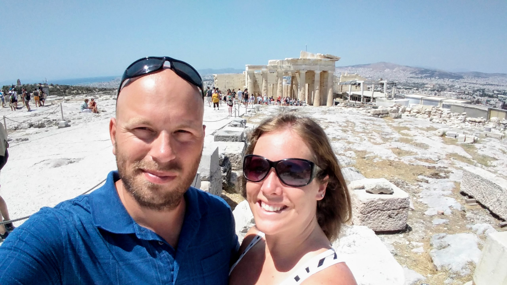
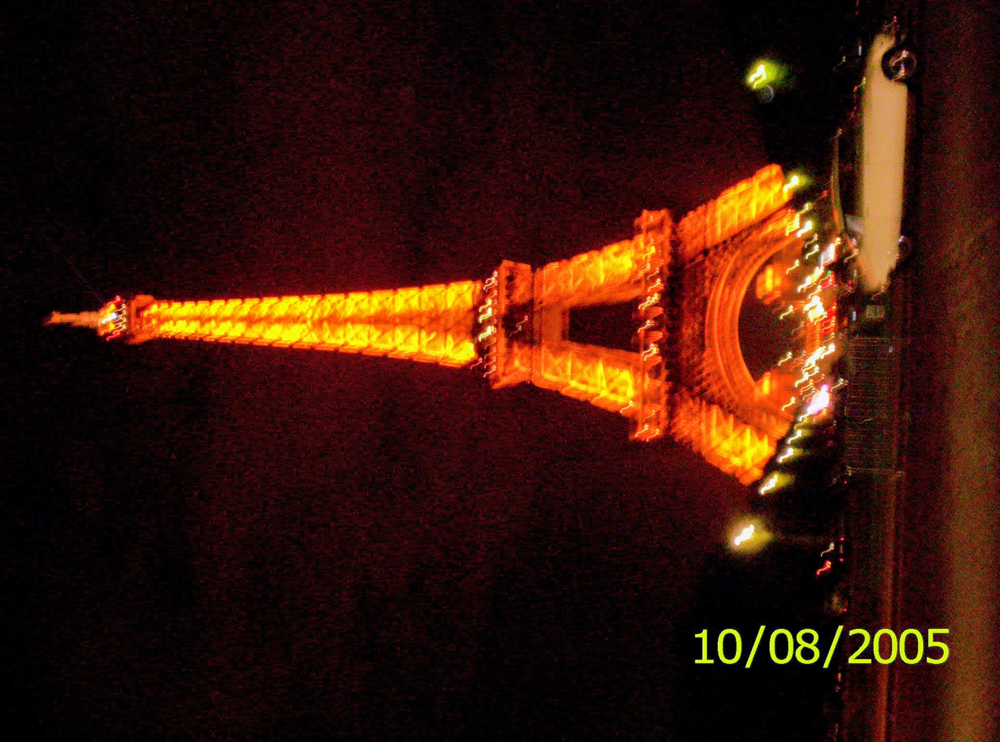
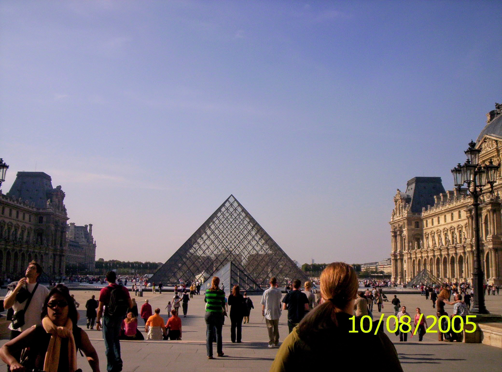
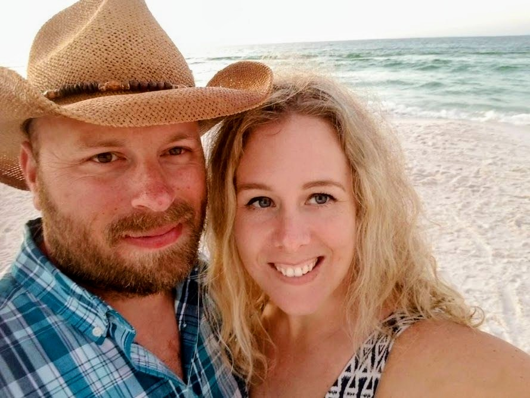
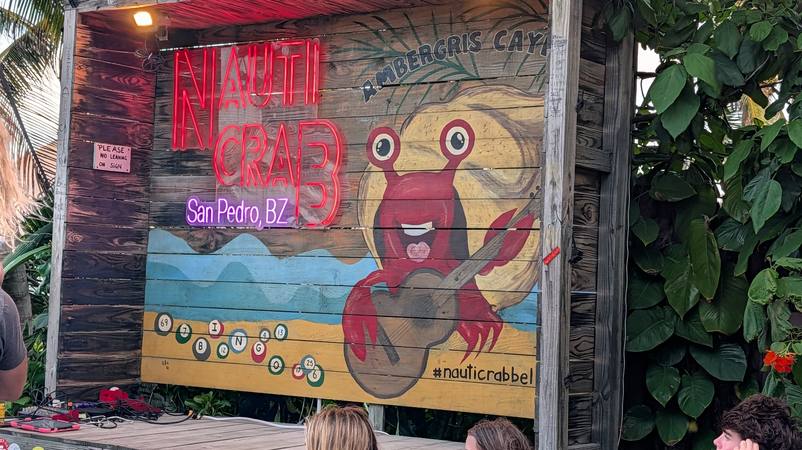
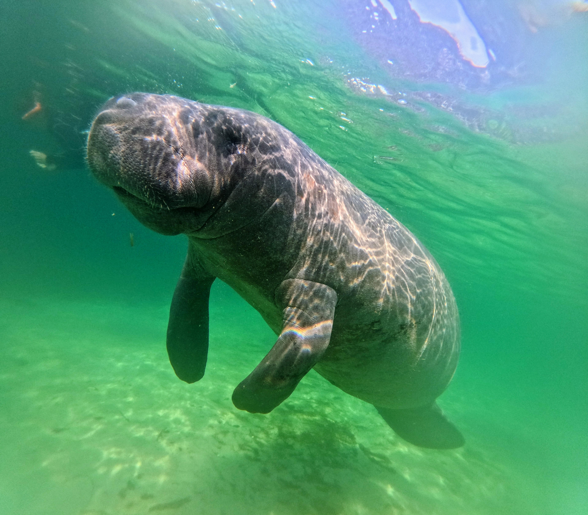

Places I've Traveled with My Wife
These are phootos of places and adventures my wife and I have shared. My wife open my eyes to the importance of travel and seeing things first hand instead of just seeing a picture. Hopefully my small collection will inspire others to travel and create their own memories.

The Acropolis
Athens, Greece | Historic Landmark
This is a picture of us at the Parthenon in Athens. Seeing the amazing architecure and the size of the building in person is amazing. the fact that people were able to build the huge stuctures is truly impressive. It is definitely aww inspiring and motivational to show that you can achieve great things withought having all the advantages of modern technology. Seeing this in person definatly encourage me to learn about other cultures and their achievements.

Eiffel Tower at Night
Paris, France | Historic Landmark
This photo captures the Eiffel Tower lit up at night. It was purely by accident that we ended up seeing this light up. We had missed connections and did not know the metro would shut down for the night and we had to wait for a taxi. During that time, we noticed the Eiffel Tower lighting up, which turned out to be a beautiful surprise. This reminds me of how sometimes the best travel experiences happen unexpectedly.

The Louvre
Paris, France | Art Museum
The Louvre was another stop during our time in Paris. This picture of the glass pyramid brings back memories of exploring the museam seeing her face light up around every corner seeing the art and history come alive. We almost missed seeing the Mona Lisa, we had to run thought the museam to see it before it closed. THis place has so much history that you can easily spend days exploring it and still not see everything..

Panama City Beach
Florida, United States | Beach Trip
One of our favorite places to visit is the beach, and one of our favorite beach trips was to Panama City Beach. This photo captures a moment of us standing on the beach, enjoying the ocean and the beautiful surroundings together. The beach to us represents relaxation, connection, and the simple joys of life. There is always so much joy and life to be found there. We have been able to continue this experiance by bring our children with us creating so many happy memories of us togather just enjoying life and not worrying about the everyday stresses.

Nauti Crab
San Pedro, Belize | Crab Races
My wife and I visited Nauti Crab in San Pedro, where they held crab races. We stumbled up on this place by chance proving once again that the best experiance are by chance. We had so much fun connectiong with locals and sharing stories. The highlight was the crab races. Normally I do not gamble but all of the the proceedes were donated tocharities helping kids recieve and education. Surprisinly we won which was just the icing on the cake. This experience reminded us of the importance of community and giving back.

Swimming with Manatees
Florida, United States | Wildlife Experience
Swimming with manatees was an experience my wife and I shared in Florida. My wife is a big animal lover and this was one of her life dreams. We were both thrilled to be able to interact with these gentle creatures in their natural habitat. At first the size of them was itimidating but there is a reason they are referred to as a sea